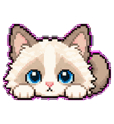
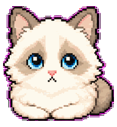
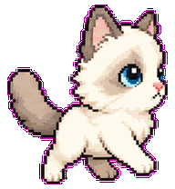
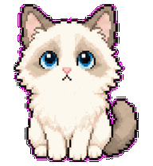
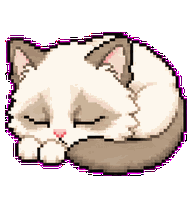
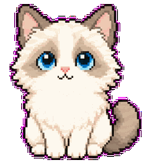
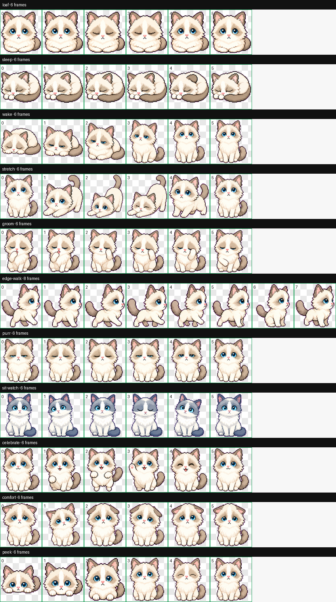

探头
工作中：安静陪伴
场景 1
工作时，它在旁边，不抢你的注意力
猫小伴会根据前台应用、窗口覆盖率和空闲状态，选择更安静的动作，并尽量待在安全边缘。
文档 / 会议 / 浏览器
窗口靠近时，小猫保持在边缘，降低打扰。
场景 2
休闲和空闲时，它会活起来
散步、探头、伸懒腰、睡觉都来自当前项目里的真实动作资产。

散步
伸懒腰
夜晚睡觉场景 3
提醒不是闹钟，是轻轻碰你一下
喝水、休息、久坐、睡觉提醒会在安静工作和全屏状态下延后，不把提醒变成新的干扰源。
喝口水吧
当前状态：可以提醒
核心能力
它不是普通桌宠，而是桌面行为感知系统
猫小伴把本地桌面信号转成低打扰的陪伴动作：知道你在工作、休闲、会议、全屏或空闲。
- 前台应用
- 窗口覆盖率
- 行为判断
- 小猫动作
状态：工作
动作：loaf
提醒队列：延后 1 条
原因：低打扰
隐私边界
本地优先，不上传屏幕内容
当前版本读取前台应用、窗口几何和空闲时间；不读取窗口正文内容，不联网同步数据。
投资亮点
从桌面挂件，走向日常陪伴入口
当前版本已经验证桌面陪伴、低打扰提醒和本地行为感知；后续可扩展到皮肤、动作包、AI 对话和办公健康陪伴。

情绪陪伴从工具软件进入日常情绪场景。
资产扩展宠物、动作、皮肤都可体系化增长。